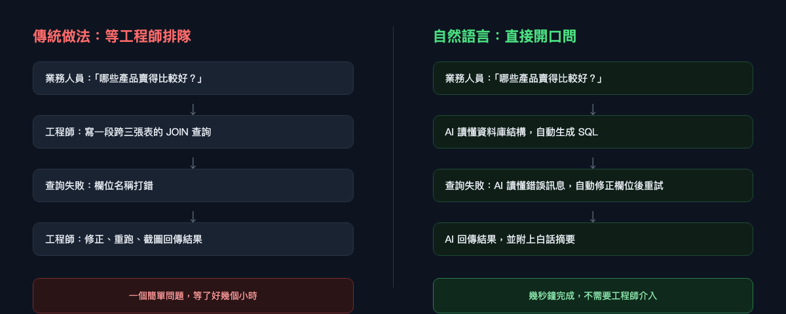
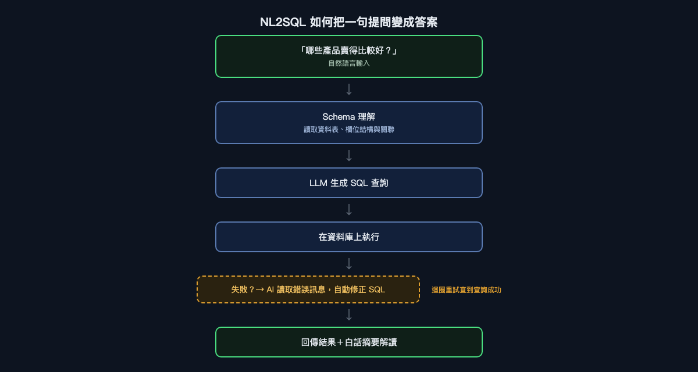
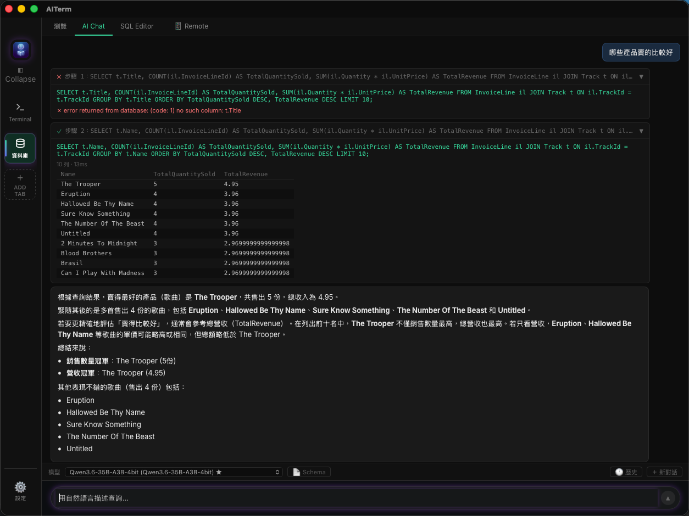

為什麼你問資料庫一個問題，還需要先學 SQL？
自然語言查詢正在悄悄拉近「有資料」與「拿到答案」之間的距離。這篇文章會介紹這個技術是怎麼運作的——也會實際看一次它跑起來是什麼樣子。
想像一個平常的下午。一位產品經理想知道上一季哪些商品賣得最好。資料就在那裡，躺在公司維護了好幾年的資料庫裡。但她沒辦法直接問它。她得去問工程師，工程師得先放下手邊的事、寫一段查詢、跑一次、把結果截圖傳回來——有時候要等好幾個小時，有時候要等到隔天。
這是現代軟體裡最奇怪的瓶頸之一：資料明明就在那裡，問題也很簡單，但兩者之間的介面，卻需要一項大多數提問者都不具備的專門技能。 這項技能就是 SQL，而過去五十年來，它一直是每一個非技術性資料問題都得先過的一道關卡。
這件事終於開始改變了——不是因為 SQL 要被淘汰，而是因為現在有一層 AI 介於「提問」和「查詢」之間，負責把一個翻譯成另一個。這通常被稱為 NL2SQL（Natural Language to SQL，自然語言轉 SQL），而要理解它，值得先搞懂這道舊瓶頸當初是怎麼出現的，再看新的這層技術到底怎麼運作。
一道沒有人刻意設計出來的關卡
要理解這個落差為什麼存在，得回頭看看 SQL 當初為什麼會出現。1970 年，Edgar Codd 提出關聯式模型；1970 年代中期，IBM 的研究人員接著推出了 SEQUEL（後來的 SQL）。這在當時是個很有野心的目標：讓人們描述「想要什麼資料」，而不用管「怎麼去拿」。相較於之前那種一筆一筆、程序式的存取方式，SQL 確實是朝「容易使用」邁出的一大步。
但「容易使用」是相對於 1975 年而言，不是相對於一個現代的業務使用者。SQL 仍然要求你知道 JOIN 是用來連接兩張表的、GROUP BY 得寫在 ORDER BY 前面、某張表裡叫 qty 的欄位，換了一張表可能就變成 quantity，還有一個逗號打錯位置，就能讓一段能跑的查詢直接變成語法錯誤。這些對一個專長是行銷、供應鏈或財務的人來說，一點都不直覺——而且這中間也從來沒有出現過讓事情變簡單的下一步演化。商業智慧儀表板確實有幫助，但僅限於有人事先想到、預先做好的問題。一旦你的問題超出了現成儀表板的範圍，你就得再度回頭找工程師。
所以過去五十年，這個安排幾乎沒變過：懂業務問題的人，通常不是能寫查詢的人；能寫查詢的人，通常也不太懂這個問題為什麼重要。每一個臨時起意的問題，都得經過一層由真人組成的翻譯層。
這個產業其實試過解決這個問題——只是不是靠把 SQL 本身變簡單。像 Tableau、Looker、Power BI 這類商業智慧工具，圍繞著「讓非工程師靠拖拉就能做出圖表」這個概念，打造出一整個產品類別，「自助式 BI」也在 2010 年代成為一個貨真價實的流行詞。但拖拉式介面解決的問題，其實比看起來要窄。它們對「有人在建立儀表板時就想到會被問到」的問題很有效：各地區的營收、每週新增註冊數、依類別分類的工單數。可是一旦你真正想問的問題，是沒有人事先想到要預先做好的——例如「上個月流失的客戶裡，有哪些人在流失前 30 天內也開過客服工單」——你又得回去向資料團隊提出申請，然後排隊等待。儀表板並沒有真的拆掉這道關卡，它只是先幫一組固定的問題，把關卡打通了而已。

技術上的轉折：教模型讀懂資料庫結構
真正改變的不是 SQL 變簡單了，而是大型語言模型在一件非常具體的任務上變得夠好了：讀懂資料庫的結構，加上一句白話問題，然後生成一段語法正確、語意也對的查詢。這就是 NL2SQL 的核心，而它可以拆解成幾個值得分開理解的步驟。
Schema 理解（Schema-aware Prompting）。 LLM 沒辦法憑空猜出你的資料表和欄位叫什麼名字——你得先告訴它。在生成任何東西之前，系統會先把相關資料表的說明、欄位、資料型別，以及表與表之間的外鍵關聯，餵給模型。這是讓 NL2SQL 變得可靠的最關鍵一環：一個對 schema 有準確、範圍恰當理解的模型，生成的查詢品質會遠遠好過瞎猜的模型。這也是為什麼一套實際上線的 NL2SQL 系統，大部分工程心力其實不是花在語言生成本身，而是花在「該揭露多少 schema 給模型」「怎麼把過大的 schema 摘要到不會塞爆 context window」，以及「當資料庫演進時，怎麼讓這份描述保持最新」。
查詢生成。 拿到 schema 之後，模型要把自然語言問題翻譯成 SQL——決定要 JOIN 哪些表、要對哪些欄位做聚合運算、篩選條件和排序方式要怎麼寫。這是從外面看起來最像魔法的部分，但它其實是在龐大的訓練資料上做模式匹配，這些資料裡包含大量的 SQL、資料庫文件，以及問題與查詢之間的對應關係。
執行與錯誤修正。 這一步是區分「玩具展示」和「真正能用的系統」的關鍵。模型寫出的第一段 SQL 查詢，不見得每次都是對的——欄位名稱可能猜錯、JOIN 條件可能有微妙的偏差，或是引用了一個聽起來很合理、但 schema 裡其實不存在的資料表名稱。一套上線等級的系統不會在第一次失敗就停下來。它會先執行查詢，如果資料庫回傳錯誤，就把這段錯誤訊息當作新的上下文餵回模型，請它修正查詢。這個「生成 → 執行 → 讀取錯誤 → 重試」的迴圈，對使用者體驗好壞的影響，往往比最初那次查詢生成本身還要大。
結果解讀。 查詢一旦成功，原始輸出通常是一張由數字和列組成的表格。最後一步是把這些數字重新轉換成語言：在原始問題的脈絡下，摘要這些數字代表什麼意思，這樣提問的人就不必自己去解讀一張結果表格。

展示畫面之外，真正棘手的部分：規模
一個只有四張表的展示用資料庫，會讓 schema 理解看起來幾乎是件小事——把表格描述清楚，剩下的交給模型就好。但真實世界的企業資料庫很少這麼「客氣」。一套上線中的正式系統，擁有數百張、甚至數千張資料表是很常見的事，其中許多是遺留系統留下來的，命名方式不一致，文件也少得可憐。你不可能把「整個 schema」直接貼進 prompt 裡——光是幾百張表，就足以塞爆任何模型的 context window；就算真的塞得下，把模型埋在一堆不相關的資料表裡，也只會讓它更容易選錯表。
這正是 NL2SQL 系統向檢索增強生成（RAG）借技術的地方：系統不會揭露整個 schema，而是先只檢索出跟目前這個問題真正相關的資料表與欄位，通常做法是比對「問題」和「每張表的描述」之間的語意相似度。一個關於「產品銷售」的問題，會檢索出 Product、Order、OrderLine 這幾張表，忽略掉另外四百張跟出貨物流或內部人資紀錄有關的表。只有這一小段被縮限過、真正相關的 schema，才會交給模型去生成查詢。把這個檢索步驟做對——決定什麼樣的相關程度才「夠格」被納入——結果證明跟語言模型本身一樣重要。一個很強的模型，如果面前放的是錯的五張表，還是一樣會很有自信地寫出錯誤的查詢。
NL2SQL 仍然需要的護欄
這一切並不代表這項技術是魔法，而且老實說，它周圍仍然需要真正的工程紀律撐著，不能只靠一個好模型。
模糊性不是一個可以完全修補掉的 bug。 「哪些產品賣得比較好」可以指銷售數量最多、營收最高，或是毛利最好——本文稍後的示範案例，剛好就展示了這種模糊性是怎麼被處理的：透過同時呈現不只一種解讀方式，而不是悄悄地選一個就算了。一套設計良好的系統，要嘛會反問一個釐清問題，要嘛就像我們接下來會看到的，把幾種合理的解讀方式都攤開來給你看。一套設計不良的系統，則會默默選一個，然後當作問題已經解決了。
預設唯讀，權限在底層落實。 一套能從白話文生成 SQL 的系統，最基本的要求應該是只生成 SELECT 查詢，而且執行這些查詢時所使用的資料庫連線，其權限本來就該反映這位使用者被允許看到什麼——列層級的安全限制、欄位層級的存取限制，不會因為介面換成自然語言就自動消失。自然語言不是繞過權限控管的藉口，它只是一道新的正門，但門後面的鎖還是同一套。
不是每個「執行成功」的查詢都是正確的查詢。 前面提到的執行迴圈，抓得住資料庫「拒絕」的查詢。但對於那種能順利執行、回傳一個看起來很合理的數字、卻在資料庫無法標記出來的情況下悄悄算錯的查詢——例如一段 JOIN 悄悄把某些列重複算了，導致加總被灌水——這個迴圈完全無能為力。這也是為什麼做得比較好的實作，會把生成出來的 SQL 跟答案一起呈現出來，而不是只給你最後那段自信滿滿的文字。看得到查詢內容的讀者，還有機會自己驗一下這個查詢合不合理；只看得到一段流暢文字的讀者，就沒有這個機會了。
昂貴的查詢，成本依然存在。 一個不理解「對一張十億筆資料的表做全表掃描」代價有多高的模型，完全有可能生成一段語法上無懈可擊、但實際執行起來會是場災難的查詢。上線等級的系統，通常會在任何東西真正對正式資料庫執行之前，先用列數上限、逾時機制，以及查詢執行計畫檢查，把生成出來的查詢包一層防護。
以上這些都不是拿來否定這項技術的理由——它們恰恰說明了，一套認真做出來的實作，看起來更像是一條把語言模型當成其中一個環節的工程化管線，而不是一個直接把資料庫綁在語言模型旁邊的產物。
實際看它跑一次
以上這些說明，配上一個具體的例子會更容易理解，所以這裡放的是 AITerm 的一次真實執行紀錄——這是一款桌面工具，讓你可以用白話文查詢連接的資料庫。
輸入的問題很簡單：「哪些產品賣得比較好？」——正是開頭那位產品經理原本得繞道找工程師才能問出口的那個問題。

仔細看上面這段執行紀錄，因為它很乾淨地示範了前面提到的「執行與修正」迴圈。第一次嘗試生成的查詢引用了 t.Title——考慮到這張表叫做 Track，這其實是一個聽起來很合理的欄位名稱猜測。但資料庫拒絕了它：no such column: t.Title。這個 schema 裡實際的欄位名稱是 t.Name，不是 t.Title。系統並沒有把這個錯誤直接丟給使用者當作死路，而是讀取了這次失敗，把查詢修正為引用正確的欄位，再重新執行——這一次成功了，回傳了十筆依照銷售數量和總營收排序的結果。
最後一步是摘要，而它處理前面「護欄」段落提到的那種模糊性的方式，很值得停下來看一下。「哪些產品賣得比較好」並沒有單一、顯而易見的答案——是銷售數量最多，還是營收最高？系統並沒有悄悄選一個就算了，而是明確把兩種解讀分開處理：先指出「The Trooper」在銷售數量上領先，接著檢查它在營收上是否也領先，確認是之後，再點出緊追在後的幾首歌曲在這兩項指標上都相去不遠。解決完這個模糊性之後，才直接說出關鍵數字——銷售量冠軍與營收冠軍——完全不需要任何讀到這段的人搞懂 SUM(il.Quantity * il.UnitPrice) 是什麼意思。
這裡真正值得注意的，不是查詢最終成功了，而是這次失敗對提問的人來說完全是隱形的。在傳統模式下，「no such column: t.Title」這種錯誤訊息會被轉交給工程師，工程師修正後重新跑一次查詢，等於又多繞了一圈。在這個模式裡，修正發生在同一次請求之內，提問的人根本不需要知道曾經有一個欄位名稱猜錯過。
這件事真正改變了什麼
這次轉變真正有趣的地方，不在於「用中文跟資料庫對話」這件事本身有多新奇，而在於當這道關卡消失之後，一個組織會發生什麼事。那些原本會被「這值不值得麻煩工程師一趟」給篩掉的問題，不再被篩掉了。行銷主管可以在會議進行到一半時，當場驗證一個假設，而不用先送出申請再等結果。客服主管可以在念頭一浮現的當下，就問出「上個月哪些客戶開的工單最多」，而不是三天後才拿到答案，那時它已經沒那麼有用了。準備董事會報告的財務分析師，也可以在原本只夠等一個查詢結果回來的時間裡，一口氣追問完五個延伸問題。
真正改變的往往不只是原本就會被問的問題變快了，而是「被問出來的問題總數」本身變多了——這是最容易被忽略的一點。這裡大部分的價值，不在於讓那些本來就重要、已經會被問的查詢跑得更快，而在於讓那些從來不值得為它去承受申請流程的摩擦、於是就這樣消失在某人腦中的小小好奇心——那種「我在想...」式的問題——重新有機會被問出來。
這並不代表工程師、schema 設計或資料治理就不再需要——恰恰相反，結構清楚、文件完整的 schema 反而變得更有價值，因為這正是 NL2SQL 系統賴以正確運作的依據，而前面提到的那些護欄（權限控管、列數上限、查詢審查）依然需要有人去建置和維護。真正被消除的，是「每一個問題都必須經過一個剛好懂查詢語言的人」這個硬性要求。資料不再只是工程師才能對話的對象，而是變成整個組織裡的每個人都能直接開口問的東西。
如果你想親自在自己的資料庫上試試看，可以看看 AITerm：https://jamesju9999.github.io/aiterm-site/
覺得這篇文章有幫助嗎？拍手（最多可以拍 50 下！）並追蹤我，看更多關於 AI 輔助開發、資料庫，以及那些正在悄悄改變人們與資料互動方式的工具的內容。